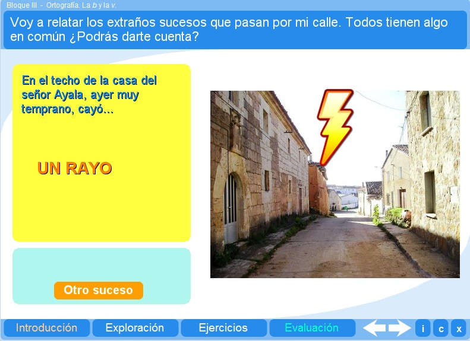
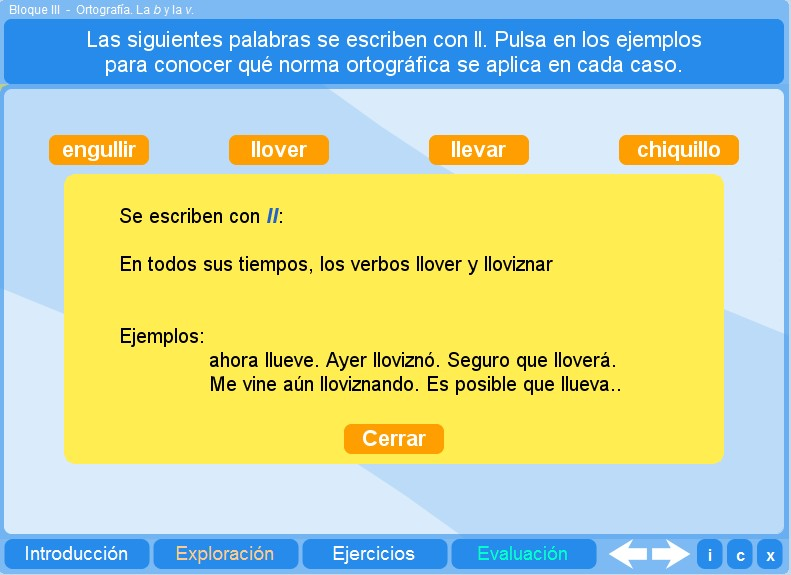
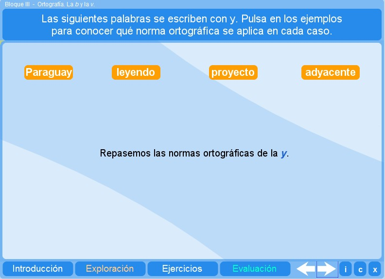
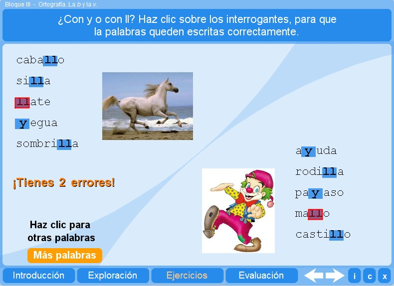
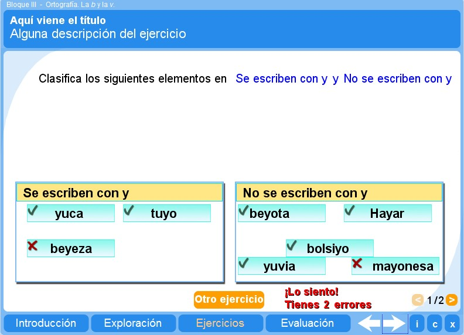
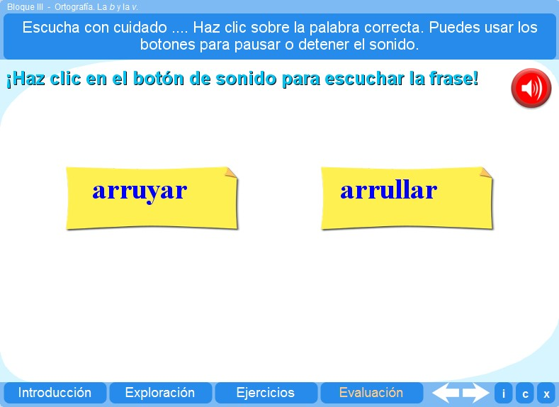

Objetivo
Ofrecer actividades que inviten al alumno a repasar y practicar las normas ortográficas de la ll y la y.
Instrucciones generales
Se puede navegar entre los apartados con el menú de la parte inferior. Este menú aparece a lo largo de todo el interactivo y conserva su funcionalidad.
También se puede navegar por las escenas por medio de las flechas de navegación que aparecen en el lado inferior derecho del interactivo. Dentro de los apartados Exploración y Ejercicios es necesario utilizar estas flechas para acceder a las escenas sucesivas de dichos apartados.

En la parte inferior derecha del interactivo se encuentran los siguientes botones:
 |
Muestra la documentación del interactivo. |
 |
Despliega los créditos correspondientes a este interactivo. |
 |
Cierra el interactivo. |
Contenidos
Introducción
Ilustra la presencia de la ll y la y en una situación particular.

Exploración 1
Ofrece al alumno la oportunidad de repasar las normas ortográficas de la ll.

Exploración 2
Permite que el alumno vea a partir de ejemplos las normas ortográficas de la y.

Ejercicio 1
El alumno puede ejercitar su ortografía de la ll y la y completando palabras.

Ejercicio 2
El alumno puede practicar la ortografía de la ll y la y con distintas palabras que debe clasificar en contenedores.

Evaluación
El alumno debe seleccionar correctamente una palabra escrita con la letra ll o y, presente en una frase que debe escuchar.

| Los materiales aquí presentados utilizan el applet Descartes Web 2.0. | |
 |
Los contenidos de esta unidad didáctica están bajo una licencia de Creative Commons. |